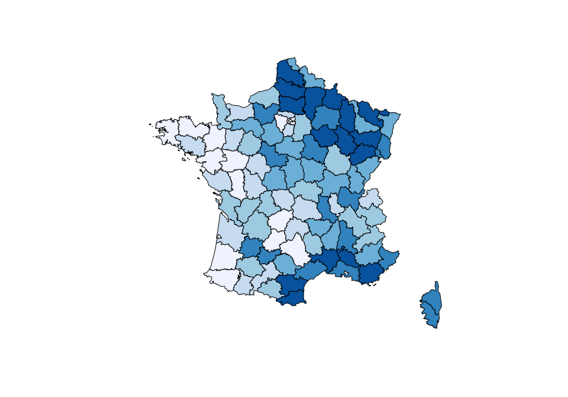
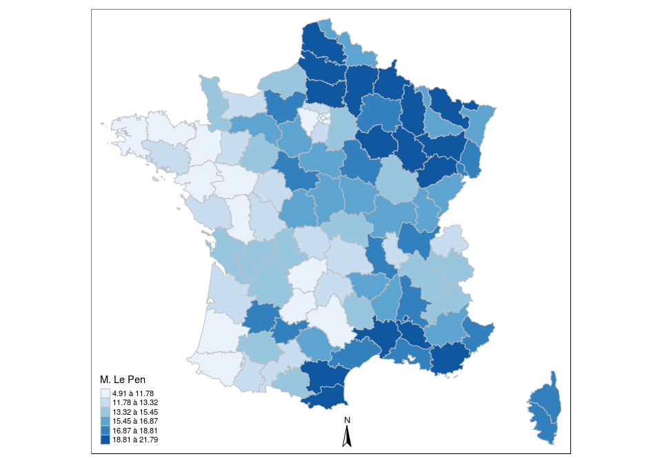

Introduction à la cartographie - avec R
Joël Gombin
2/2/2016
Rappels sur l’utilisation de R pour le data management
Gestion des objets spatiaux dans R
Un objet spatial, c’est quoi ?
- une collection de géométries (points, lignes, polygones), regroupées en couches (layers)
- une table attributaire (des données)
- un identifiant unique pour faire le lien entre les deux !
- si les choses sont bien faites, une projection.
Formats spatiaux
- le plus répandu, la référence : le shapefile (format défini par ESRI). Pose pas mal de problèmes : plusieurs fichiers (.shp, .dbf., .prj, .shx, etc.) ; nom des variables limité à 10 caractères ; pas de valeurs manquantes ; pas plus de 255 variables ; pas de fichiers de plus de 2GB ; format propriétaire…
- le format promu par Google : le KML
- le nouveau standard de facto en ligne : GeoJSON
- une version améliorée et topologique du GeoJSON : le topoJSON
- etc. etc.
Il existe des outils libres pour passer d’un format à l’autre, en particulier OGR/GDAL. R possède des surcouches de ces librairies.
Et dans R ?
Plusieurs classes dans R pour représenter les objets spatiaux. La plus importante (et la seule qu’on utilisera) provient de la librairie sp et est SpatialPolygonsDataFrame (il existe aussi SpatialPoints* et SpatialLines*).
On peut créer un objet SpatialPolygonsDataFrame à la main, mais en réalité on ne le fait jamais, on importe un shapefile (ou autre) dans R. Plusieurs fonctions pour cela ; la meilleure est readOGR, dans le package rgdal.
#install.packages("sp")
#install.packages("rgdal")
library(sp)
library(rgdal)
departements <- readOGR("./data/departements", "DEPARTEMENT", stringsAsFactors = FALSE)## OGR data source with driver: ESRI Shapefile
## Source: "./data/departements", layer: "DEPARTEMENT"
## with 96 features
## It has 11 fieldssummary(departements)## Object of class SpatialPolygonsDataFrame
## Coordinates:
## min max
## x 99226 1242375
## y 6049647 7110480
## Is projected: TRUE
## proj4string :
## [+proj=lcc +lat_1=44 +lat_2=49 +lat_0=46.5 +lon_0=3 +x_0=700000
## +y_0=6600000 +ellps=GRS80 +units=m +no_defs]
## Data attributes:
## ID_GEOFLA CODE_DEPT NOM_DEPT CODE_CHF
## Min. : 1.00 Length:96 Length:96 Length:96
## 1st Qu.:24.75 Class :character Class :character Class :character
## Median :48.50 Mode :character Mode :character Mode :character
## Mean :48.50
## 3rd Qu.:72.25
## Max. :96.00
## NOM_CHF X_CHF_LIEU Y_CHF_LIEU X_CENTROID
## Length:96 Min. : 1713 Min. :61089 Min. : 1770
## Class :character 1st Qu.: 5531 1st Qu.:64012 1st Qu.: 5451
## Mode :character Median : 6584 Median :66318 Median : 6608
## Mean : 6840 Mean :66099 Mean : 6844
## 3rd Qu.: 8461 3rd Qu.:68204 3rd Qu.: 8416
## Max. :12285 Max. :70594 Max. :12112
## Y_CENTROID CODE_REG NOM_REGION
## Min. :61036 Length:96 Length:96
## 1st Qu.:64011 Class :character Class :character
## Median :66303 Mode :character Mode :character
## Mean :66118
## 3rd Qu.:68266
## Max. :70442Les objets SpatialPolygonsDataFrame sont complexes, mais comprennent pour simplifier d’une part les polygones (auxquels on accède directement : departements[1,]) et d’autre part le dataframe, qui est un slot de l’objet :
summary(departements@data)## ID_GEOFLA CODE_DEPT NOM_DEPT CODE_CHF
## Min. : 1.00 Length:96 Length:96 Length:96
## 1st Qu.:24.75 Class :character Class :character Class :character
## Median :48.50 Mode :character Mode :character Mode :character
## Mean :48.50
## 3rd Qu.:72.25
## Max. :96.00
## NOM_CHF X_CHF_LIEU Y_CHF_LIEU X_CENTROID
## Length:96 Min. : 1713 Min. :61089 Min. : 1770
## Class :character 1st Qu.: 5531 1st Qu.:64012 1st Qu.: 5451
## Mode :character Median : 6584 Median :66318 Median : 6608
## Mean : 6840 Mean :66099 Mean : 6844
## 3rd Qu.: 8461 3rd Qu.:68204 3rd Qu.: 8416
## Max. :12285 Max. :70594 Max. :12112
## Y_CENTROID CODE_REG NOM_REGION
## Min. :61036 Length:96 Length:96
## 1st Qu.:64011 Class :character Class :character
## Median :66303 Mode :character Mode :character
## Mean :66118
## 3rd Qu.:68266
## Max. :70442library(dplyr)
departements@data %>%
filter(NOM_REGION %in% "ILE-DE-FRANCE")## ID_GEOFLA CODE_DEPT NOM_DEPT CODE_CHF NOM_CHF
## 1 76 75 PARIS 101 PARIS-1ER-ARRONDISSEMENT
## 2 78 77 SEINE-ET-MARNE 288 MELUN
## 3 79 78 YVELINES 646 VERSAILLES
## 4 92 91 ESSONNE 228 EVRY
## 5 93 92 HAUTS-DE-SEINE 050 NANTERRE
## 6 94 93 SEINE-SAINT-DENIS 008 BOBIGNY
## 7 95 94 VAL-DE-MARNE 028 CRETEIL
## 8 96 95 VAL-D'OISE 500 PONTOISE
## X_CHF_LIEU Y_CHF_LIEU X_CENTROID Y_CENTROID CODE_REG NOM_REGION
## 1 6516 68624 6517 68620 11 ILE-DE-FRANCE
## 2 6748 68266 6950 68362 11 ILE-DE-FRANCE
## 3 6364 68564 6149 68578 11 ILE-DE-FRANCE
## 4 6579 68361 6441 68249 11 ILE-DE-FRANCE
## 5 6416 68659 6458 68556 11 ILE-DE-FRANCE
## 6 6588 68679 6617 68687 11 ILE-DE-FRANCE
## 7 6598 68532 6609 68531 11 ILE-DE-FRANCE
## 8 6342 68838 6365 68873 11 ILE-DE-FRANCEOn peut ainsi sélectionner une partie seulement d’un SpatialPolygonsDataFrame, en fonction de données de la table attributaire. Malheureusement, on ne peut (pour l’instant ?) utiliser la syntaxe de dplyr, mais on peut en revanche utiliser la fonction subset, avec une syntaxe proche (sauf qu’on sélectionne les lignes et, le cas échéant, les colonnes de la table attributaire dans la fonction subset).
iledefrance <- departements %>%
subset(NOM_REGION %in% "ILE-DE-FRANCE")On peut aisément visualiser les objets spatiaux au moyen de la fonction plot :
plot(departements)
## ou :
## departements %>% plot()Cartographie statique (i.e. print) avec R
Deux modes graphiques dans R
R connaît plusieurs manières de produire des graphiques. Parmi les trois plus importantes :
- les fonctions de base du logiciel. De bas niveau, donc on peut configurer de manière très fine. Mais le code peut être très verbeux, long et relativement complexe car la syntaxe n’est pas très homogène.
lattice: un système graphique appuyé sur une réflexion importante par William S. Cleveland, de haut niveau. Peu utilisé aujorud’hui.ggplot2: un système graphique qui a fait la renommée de R. Développé par Hadley Wickham, s’appuie sur lagrammar of graphicsde Leland Wilkinson. Très puissant, très stable, se déploie aujourd’hui en version plus orientée web avecggvis.
On peut faire de la cartographie dans ces trois frameworks. On n’examinera pas lattice, qui n’est guère dynamique et pas très bon en cartographie. Restent donc deux approches : en base et en ggplot2.
Cartographier en base : le cas d’une carte choroplèthe
En utilisant les commandes graphiques de base, on peut faire une carte choroplèthe “à la main”, en suivant chaque étape.
Rapprocher le fonds de carte et les données
On commence par charger le jeu de données (ici, les résultats de l’élection présidentielle de 2012 par département).
load("./data/Pres2012dpts.Rdata")On vérifie qu’on a bien les mêmes identifiants uniques dans le jeu de données et le fonds de carte :
head(dpts$CodeDpt)## [1] "01" "02" "03" "04" "05" "06"head(departements@data$CODE_DEPT)## [1] "01" "02" "03" "04" "05" "06"Il reste à fusionner la table attributaire du SpatialPolygonsDataFrame et le jeu de données importé, en utilisant la fonction match (attention : merge peut changer l’ordre des lignes, et les fonctions join de dplyr suppriment les row.names - à éviter, donc !) :
departements@data <- cbind(
departements@data,
dpts %>% arrange(match(departements$CODE_DEPT, dpts$CodeDpt))
)Discrétiser
Pour faire une carte choroplèthe, il faut discrétiser une variable continue. Il existe de nombreuses manières de discrétiser une variable continue (voir la séance précédente). Le package classInt permet de le faire aisément.
library(classInt)
bornes <- classIntervals(departements@data$LePen.ins, n = 6, style = "quantile")$brksIl faut ensuite associer une échelle de couleurs à cette discrétisation. Le package RColorBrewer (associé au site ColorBrewer) est utile pour cela.
library(RColorBrewer)
couleurs <- brewer.pal(6, "Blues")
couleur <- couleurs[findInterval(departements@data$LePen.ins, bornes, all.inside = TRUE)]Représenter la carte
Il ne reste alors plus qu’à représenter la carte :
plot(departements, col = couleur)
On peut utiliser certaines options graphiques :
plot(departements, col = couleur, border = "grey", lwd = 0.5)
Il ne reste plus qu’à ajouter les finitions : légende, titre, crédits, flèche nord…
library(maptools)
# legende
# On utilise locator() pour décider manuellement du positionnement de la légende
legend(x = locator(), legend = leglabs(round(bornes, 2), over = "plus de", under = "moins de"),
fill = couleurs, bty = "n", pt.cex = 1, cex = 0.7, title = "En % des inscrits")
# Titre
title(main = "Vote pour Marine Le Pen, élection présidentielle de 2012", sub = "Auteur: Sciences Po crew, 2016",
cex.sub = 0.7)
# échelle
x1 <- bbox(departements)[1]
y1 <- bbox(departements)[2]
x2 <- bbox(departements)[3]
y2 <- bbox(departements)[4]
xscale <- x1
yscale <- y1
sizescale <- 100000
labelscale <- "100km"
SpatialPolygonsRescale(layout.scale.bar(), offset = c(xscale, yscale), scale = sizescale,
fill = c("black"), plot.grid = F)
text(xscale + sizescale/2, yscale, paste(labelscale, "\n\n", sep = ""), cex = 0.7)
# fleche nord
xarrow <- x1
yarrow <- y2 - (y2 - y1)/10
SpatialPolygonsRescale(layout.north.arrow(type = 2), offset = c(xarrow, yarrow), scale = 50000,
plot.grid = F)
Des packages de plus haut niveau
Bon, comme on voit, c’est assez laborieux… C’est pourquoi, plusieurs packages existent pour pouvoir utiliser les graphiques de base tout en recourant à des fonctions de plus haut niveau. L’un d’entre eux, français, est rCarto :
# install.packages(rCarto)
library(rCarto)
mapChoropleth(shpFile = "./data/departements/DEPARTEMENT.SHP",
shpId = "CODE_DEPT",
df = dpts,
dfId = "CodeDpt",
var = "LePen.ins",
nclass = 6,
style = "quantile",
posLeg = "bottomleft",
palCol = "Blues",
title = "Vote pour Le Pen, élection présidentielle de 2012",
legend = "en % des inscrits",
author = "Sciences Po crew",
sources = "Ministère de l'intérieur",
scalebar = TRUE,
scalebarSize = 100000,
scalebarText = "100 km",
northArrow = TRUE,
northArrowSize = 50000,
width = 10,
height = 8)
Le new kid on the block est le package tmap.
# devtools::instal_github("mtennekes/tmap/pkg")
library(tmap)
shp_dpts <- append_data(departements, dpts, key.shp = "CODE_DEPT", key.data = "CodeDpt")## Keys match perfectly.tm_shape(shp_dpts) +
tm_fill(col = "LePen.ins", palette = "Blues", style = "quantile", n = 6, title = "M. Le Pen", legend.format = list(text.separator = "à")) +
tm_borders(col = "grey") +
tm_compass(position = c("center", "bottom"))
Permet de faire des choses très avancées :

L’approche avec ggplot2
L’apprentissage de ggplot2nécessiterait un cours en tant que tel. Il présente certains avantages pour la cartographie, notamment dans le cadre de travaux scientifiques (petits multiples faciles à réaliser), mais aussi certains inconvénients (lent, peu ou pas de possibilité d’utiliser des fonctions de bas niveau).
Une étape nécessaire dans le workflow de ggplot2 est de transformer un objet SpatialPolygonsDataFrame en simple dataframe, au moyen de la fonction fortify :
#install.packages("mapproj")
#install.packages("ggthemes")
library(ggplot2)
library(ggthemes)
ftfDepartements <- fortify(departements, region = "CODE_DEPT")
# on merge ensuite la variable à représenter :
ftfDepartements$LePen.ins <- dpts[match(ftfDepartements$id, dpts$CodeDpt), "LePen.ins"]
ftfDepartements %>%
ggplot(aes(x = long, y = lat, group = group)) +
geom_polygon(aes(fill = LePen.ins)) +
coord_equal() +
xlab("") +
ylab("") +
theme_map()